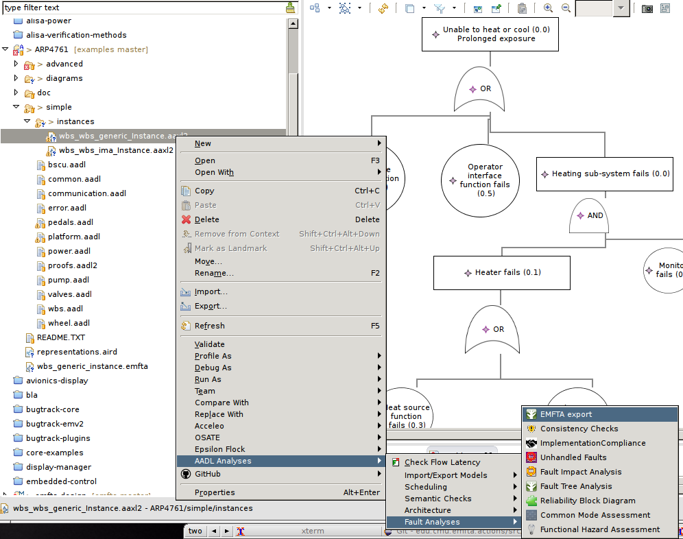
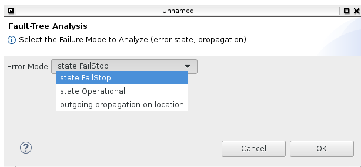
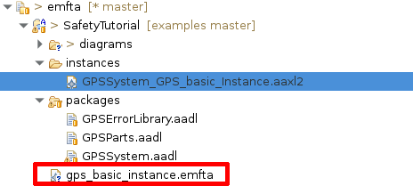

The AADL modeling language has a capability to specify errors and failures in an architecture model. It already has a bridge to several fault-tree analysis tools, either commercial or open-source. The EMFTA bridge adds the capability to export the safety information from AADL to EMFTA.
The big advantage of such an approach is that everything resides in Eclipse: the architecture (AADL) model but also the FTA model. It makes the tool usage more easy and consistent and avoid to switch from one tool to another.
To generate the EMFTA model from the AADL model, proceed as follow:
Once complete, a file with the emfta is generated in the project, as shown in figure 3. You can then open it with EMFTA. Do not forget to switch to the Modeling (or Sitius) perspective in your environment, convert the project to a modeling project but also use the appropriate representation.
Figure 1: Selection of EMFTA export function

Figure 2: Selection of the Failure Mode to process

Figure 3: EMFTA file created